|
|
НОВОГОДНЯЯ СКАЗОЧКА
|
|
Фотографии наконец-то появились на сайте (пленку проявил 24.02.2008 :) ... 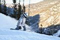 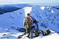 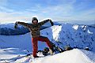 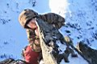 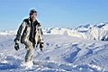 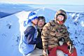 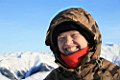 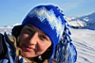 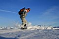 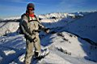 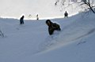 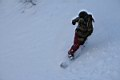 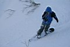 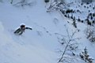 Фотосессия на горе Мамай и несколько фото на спуске по Высокому цирку Народ приходит и уходит, уходит и приходит . Сегодня утром забежал Лёха Пестов, свеж и весел как байкальский ветер. Днем прощались-обнимались с Ульяной, Антоном и Ксюшей. Вечером шумным табором зашли на свою поляну улан-удэнцы, а к нам в зимуху вписался Ленкин друг Папараций - по всеобщему мнению, самый мегапозитивный чувак, правда со своими тараканами в голове. Но кто же здесь без них :) Лёха Слюдянский |
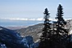
Дальше гонки по лесу. Полная импровизация бордкросса с Лехой-1, елкинг,
мягкий бугрятник у ручья, кувыркинг :)) Под конец - выкатили сразу к
зимухе :))) Приятно! Волшебно! Восхитительно!
Скыдываем все в кули, и на выкат, пожелав остающемуся Папараци удачи,
мы еще увидимся :)))
Выкат - не особо - снега много, почти как по бобслейной
трассе, но мягкой. У меня снова расстегивается задний креп в самых неподходящих
местах - пора их менять нафик. Чертовски страшно катить на одной ноге,
палочки не спасают. Потом пошел снег, Сказочный! Снежники размером с
варежку! И нифига не видно! лан, лЭП-ка уже близко! Иду, Эльдо грустно
катится на веревочке позади меня, вот и все.
Но это не конец истории :))))
Leen ( leen-ru.livejournal.com )
|
Фотографии наконец-то появились на сайте (пленку проявил 24.02.2008 :) ... 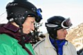 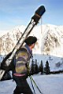 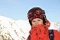 Проторенной дорожкой поднимаемся на Три Березы. Там встречаем улан-удэнцев, у них еще впереди мамайские каникулы, а нам уже пора и честь знать. Поднимаемся дальше, переговариваемся по рации с Лёхой, он уже где-то на северном отроге, сегодня встал пораньше и катает в одного. Мы стартуем не доходя до Мамая, по кулуару в северный цирк. Из него по нашему ручью устраиваем гонки через бугры и елки. Все, накатались! Время собирать пустые бутулки и консервные банки, и возвращаться обратно, к цивилизованному обществу и теплой ванне. В общем, оставили Папарация одного, будет "домовым",
или там "зимовым", не важно. И поехали до Выдрино. Я,
Света, Лёха, Лена. Ну там же машина, горячая баня и мои гостеприимные
родители, которые сами ушли к кому-то в гости, каникулы же :)
Лёха Слюдянский |
Фото: Лёха, Света, Лена
Начало здесь...
Январь 2008